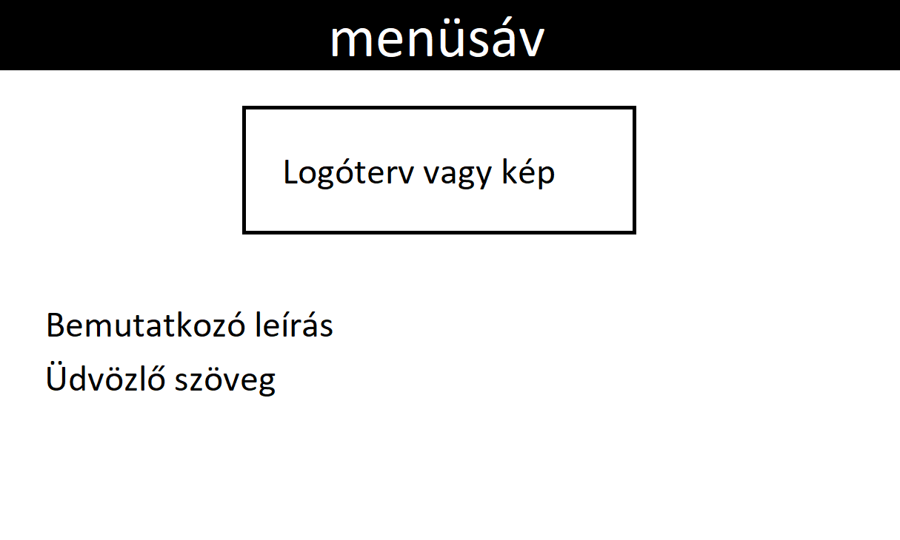
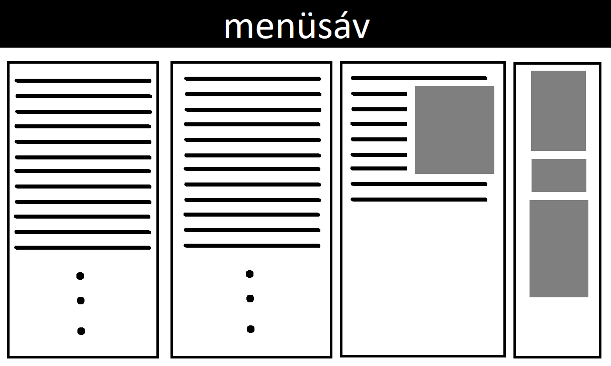
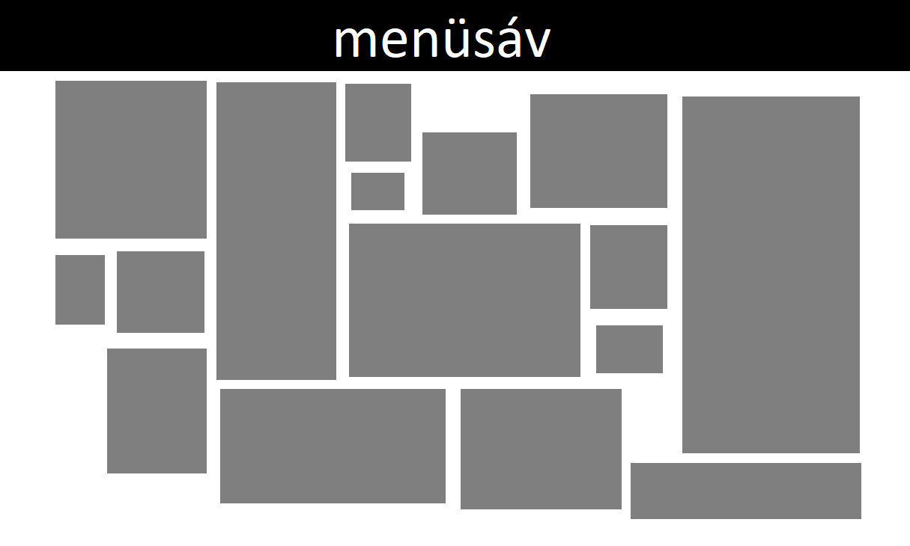

 Mindenképp egy letisztult, egységes színvilágú, könnyen átlátható holnap elkészítésére törekedtem. Felmerült bennem a lenyitható menüsáv ötlete is, de egyszerűbbnek bizonyult, mind kezelhetőség, mind megvalósítás szempontjából ennek a résznek a lap tetejére való elhelyezése.
 Az eredeti tervem az oldal 3 vagy 4 oszlora bontása volt, és ezeken az oszolopokon belül szerettem volna létrehozni a legördülő listákat. Végül több próbálkozás után, úgy döntöttem, esztétikusabb, és különböző képarányú ezközökön könnyebben olvasható ha ezeket az elemeket egymás alatt helyezem el.
 A munkáimat mindenképp szöveg nélkül akartam megjeleníteni, mivel szerettem volna ha a képek 'folyamát' nem töri meg szöveg. Illetve az is cél volt, hogy késöbb könnyen bővíthető felületet hozzak létre. Sok próbálkozást, és utánajárást igényelt, hogy hogyan tud megnyílni egy rákattimntással az adott kép teljes méretben. Több lehetőség és próbálkozás után döntöttem úgy, hogy ugyanannak az oldalnak a tetején nyíljon meg, és 'x-el' a jobb felső sarokban lehessen bezárni.